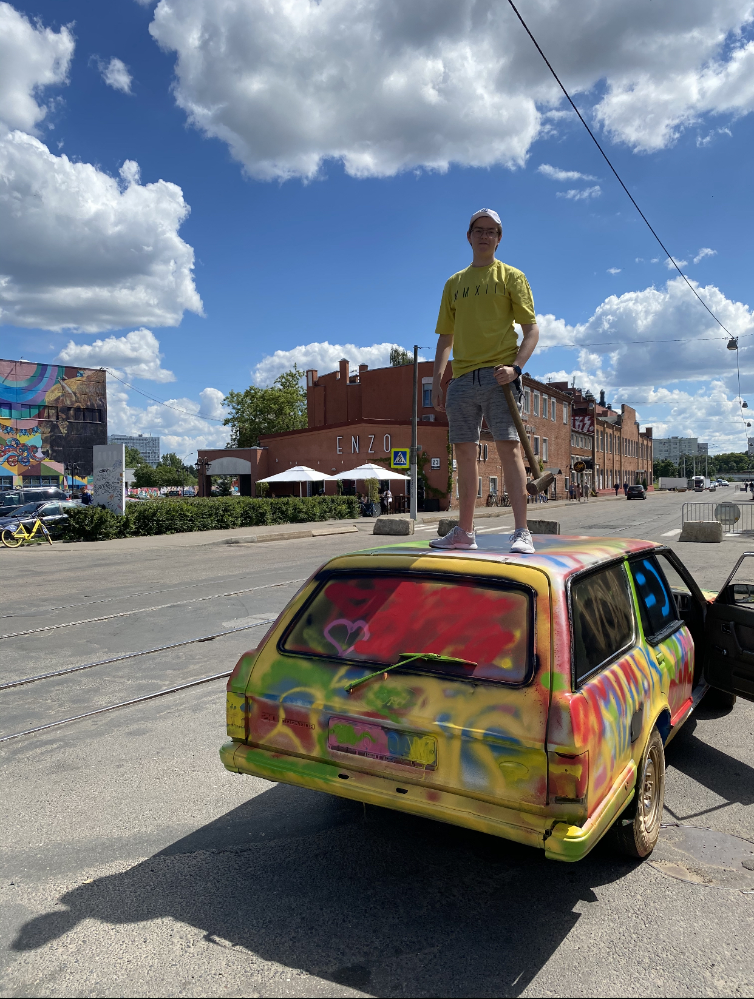

|  | Я с детсва очень люблю автомобили, много читаю о автопроизовдителях, истории автомобилестроения, гонках и даже по-немногу изучаю мировые авторынки. | Автомобили |
|---|
| Сьемки | А еще я люблю аэросьемки, и неплохо освоил квадрокоптер этим летом меня пригласил автоклуб BASE на сьемки своего мероприятия. Я иногда снимаю гоночные мероприятия, один учавствовал в сьемках раритетного авто) Два моих хобби слились в одно, и это прекрасно! |  |
|---|